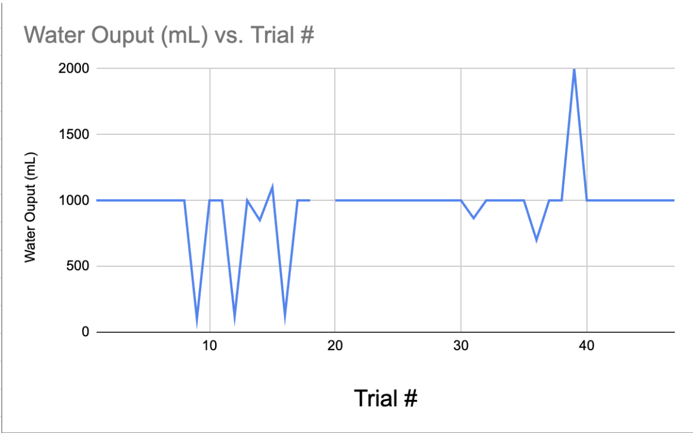
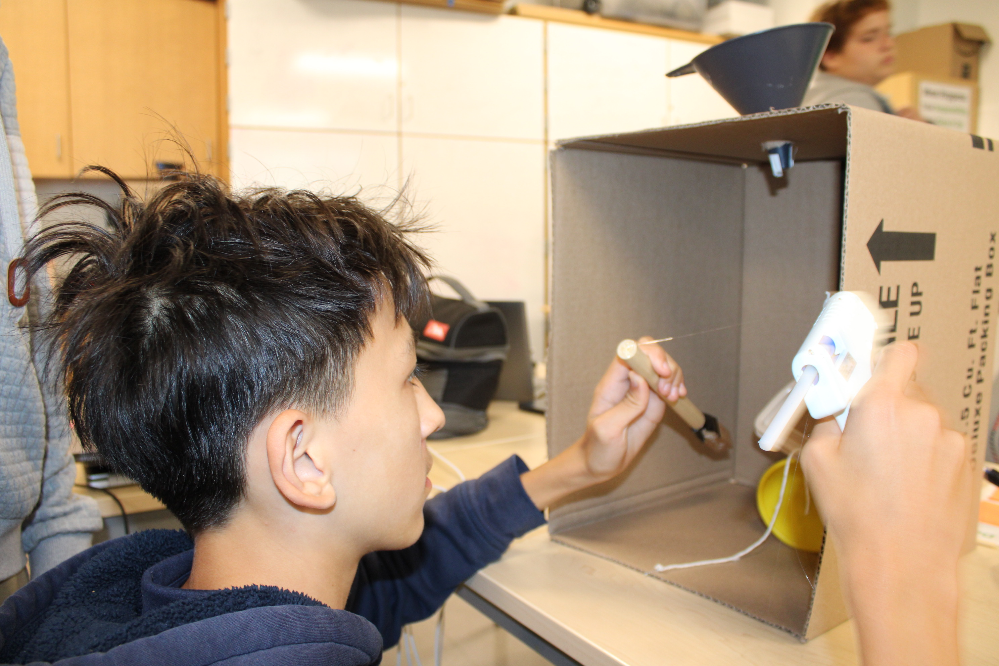
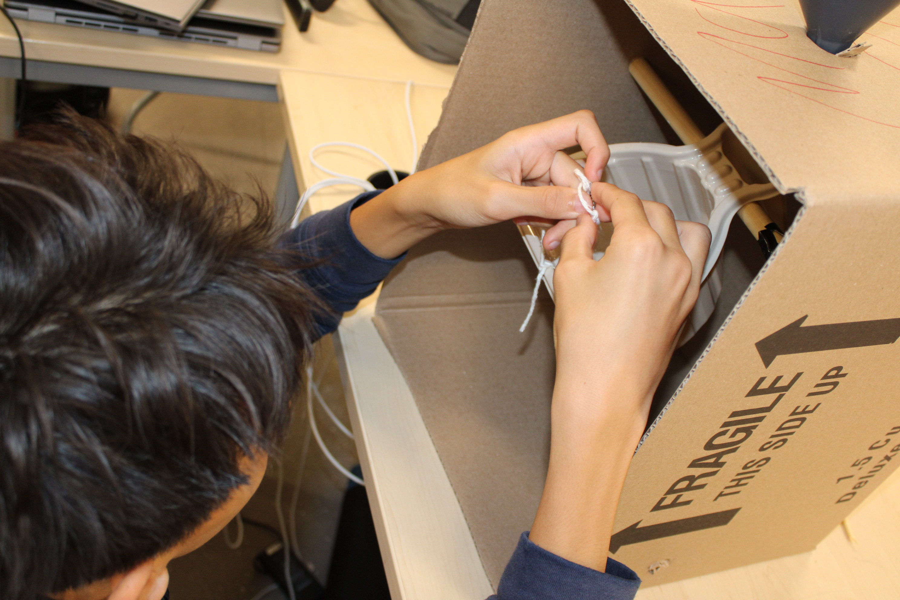
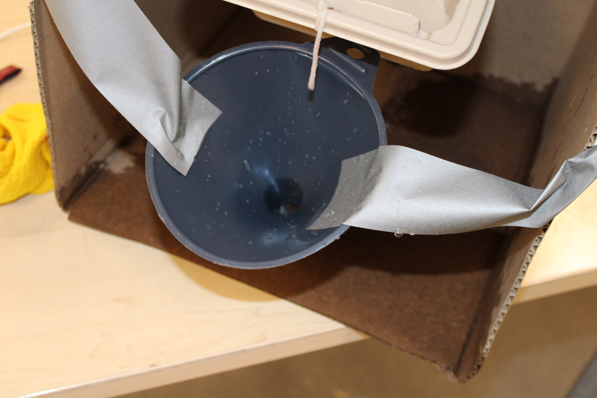
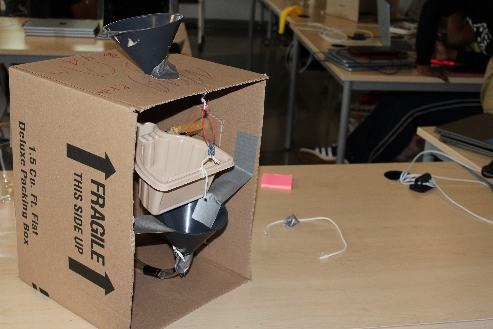
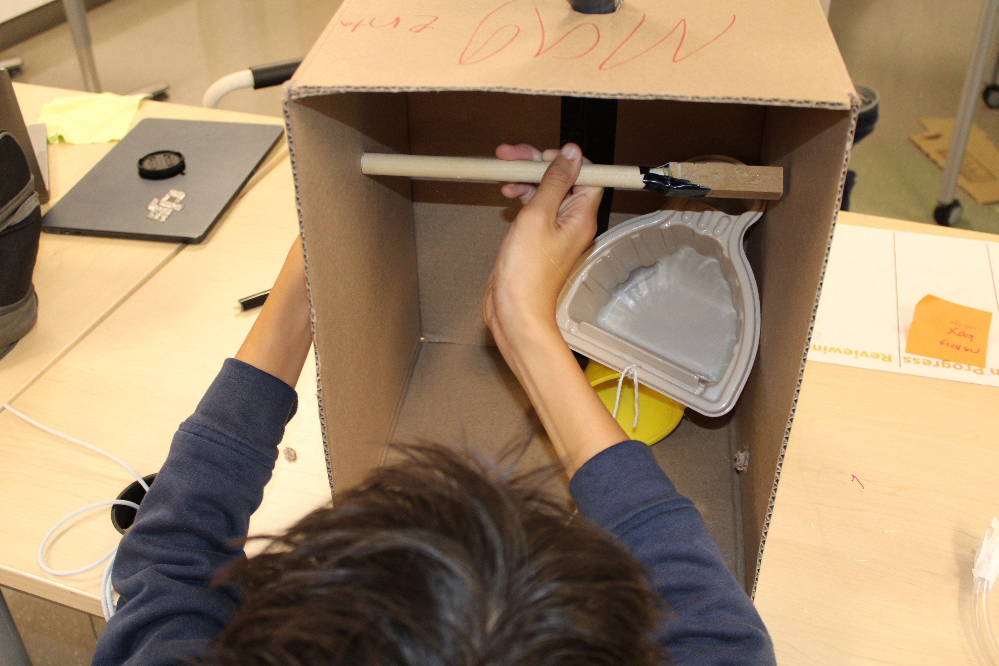
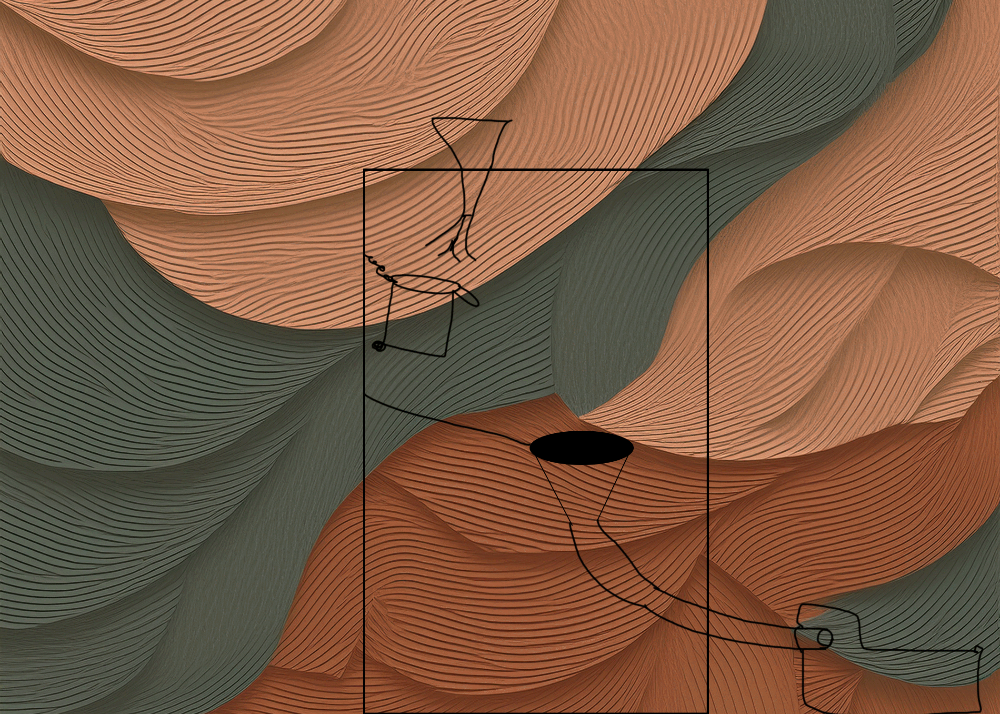
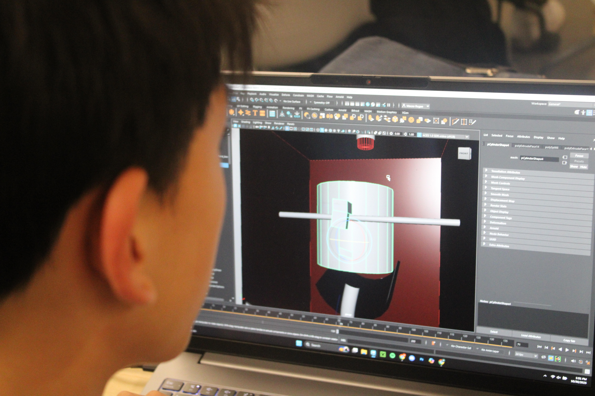
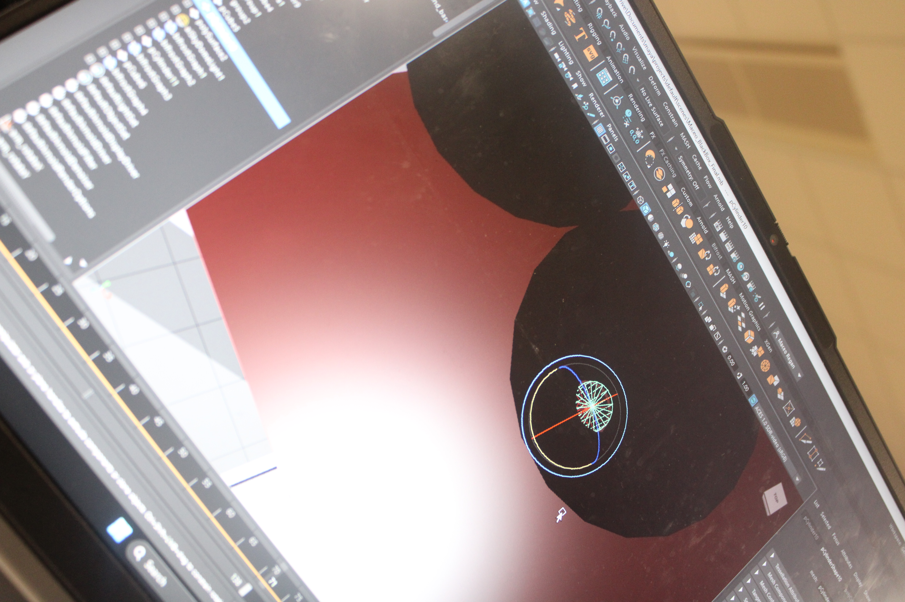

Mr Sinusas's mystery is a black box that has a mysterious contraption inside. When we pour in 1,000 ml sometimes it outputs less and sometimes outputs more than what was originally put in. We investigated it in a controlled setting where we would pour in 1,000 ml of water and measure the output in ml. Our goals in this investigation were to come up with a hypothesis about what was inside the Box and gather data. Here is some data that we gathered:

In the Black Box there is a split tube that leads into two different containers. Most of the time when we input a certain amount of water we get a different amount as an output. Even before testing most would assume that somehow the water is split. This water is most likely split by a tube so somewhere inside this contraption there is a tube that has one input and two outputs. In our initial data we were able to figure out that after a couple of pours the Black Box gave us extra.
My group and I then took that data and brainstormed different mechanisms that could be inside the black box. In the model that I built the tube wasn't split properly and there weren't enough containers inside the box so it did not work. The way it didnt work was after a certain amount of water the tube only outputted what was put in. The key structures inside my model were a bucket that could be tipped and a tube that poured into the bucket. We tested our model by pouring in 100 milliliters at a time and seeing the output. Here is some of our materials, build day photos, and data:






| Trial # | Total Water Imput | Total Water Output |
|---|---|---|
| 1 | 100 | 0 |
| 2 | 200 | 0 |
| 3 | 300 | 0 |
| 4 | 400 | 0 |
| 5 | 500 | 0 |
| 6 | 600 | 100 |
| 7 | 700 | 200 |
| 8 | 800 | 300 |
| 9 | 900 | 400 |
| 10 | 1000 | 500 |
For those who dont know, models are a representation of something original, for example a model of an airplane could be a smaller version of that same airplane. They are useful to get a visual grasp or to quantify data. In our case this model was useful to get a grasp of what was inside the Box. Their strengths are the fact that they can be easily made and can be used to replicate the original; their weaknesses are the fact that they are not made out of the same material and if we do not fully know what is in the original then we cannot make an accurate model. My claim is correct because there is only one way for a tube to have one input, and output two different variables. There must be a split tube inside the black box somewhere. Even though my model didn't work properly it still gave us a lot of evidence. that being that a single tube will not work because the water will not split at all. Some might say that there might just be two containers but if there were two containers there would be no way for those containers to tip without a mechanism because of the balance. Also, if that was true then the two separate containers would not have enough storage to tip inside the Box.
To begin our digital photography, design, and Animation work we used cameras to document our progression and learning throughout each of the steps. These cameras are useful to see how much we progressed throughout the days and to see contrast in our beginning and end designs. We used the rule of thirds, framing, and different angles to really reshape the way the images of our model building were perceived. Using these cameras we documented all of our progression throughout the build of the physical model and our future steps.
Furthermore, we went into photoshop to accurately depict what we had brainstormed. Once we had finished learning how to draw and use layers properly in Photoshop we then moved on to animation. We were able to animate what we thought was the process of the water going into the box and it coming out of the box using frames. Finally we were able to make gifs to show the animation in the way that we had originally imagined.

Finally, we used a program called Maya to 3D design a model of the black box. We used many intricate tools such as rotate, scale, Channel, extrude, bevel, Curve, Boolean, and lighting to depict what we had previously made in photoshop. We were also able to render them in a 3D format by rigging up a virtual camera and using a basic frame by frame rendering technique. We were also able to include objects like our hands, joints on our hands, tubes, supports, cups, and funnels. In order to make the hands look realistic we used special materials and gave them extra weight, transparency, and smoothness to better suit our skin. Here is some photos of our design:






One of the 21st Century skills that I demonstrated during this project was my accessing and analyzing information skills. I had to use this skill a lot because before this quarter I had no idea how to use any of the tools used in our projects. I had to not only take advice from teachers and peers but also research how to use tools on my own time so I could advise my friends and classmates. For example in the Maya unit I wanted to know how to add a cloth in my render for one of the “do nows”. Because the teachers were wrapped up with other students I was able to research how to do it on my own by using multiple research tools from different sources such as YouTube and informative websites. During the project I was also able to accurately take the information from the teachers and use it in my work. One example of how I did this was in our Photoshop unit I was able to listen to the teacher and figure out how to use different brushes.